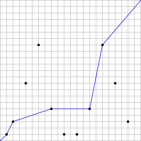

Let n be a positive integer. Suppose there are stations at the coordinates (x, y) = (2i mod n, 3i mod n) for 0 ≤ i ≤ 2n. We will consider stations with the same coordinates as the same station.
We wish to form a path from (0, 0) to (n, n) such that the x and y coordinates never decrease.
Let S(n) be the maximum number of stations such a path can pass through.
For example, if n = 22, there are 11 distinct stations, and a valid path can pass through at most 5 stations. Therefore, S(22) = 5. The case is illustrated below, with an example of an optimal path:

It can also be verified that S(123) = 14 and S(10000) = 48.
Find ∑ S(k5) for 1 ≤ k ≤ 30.